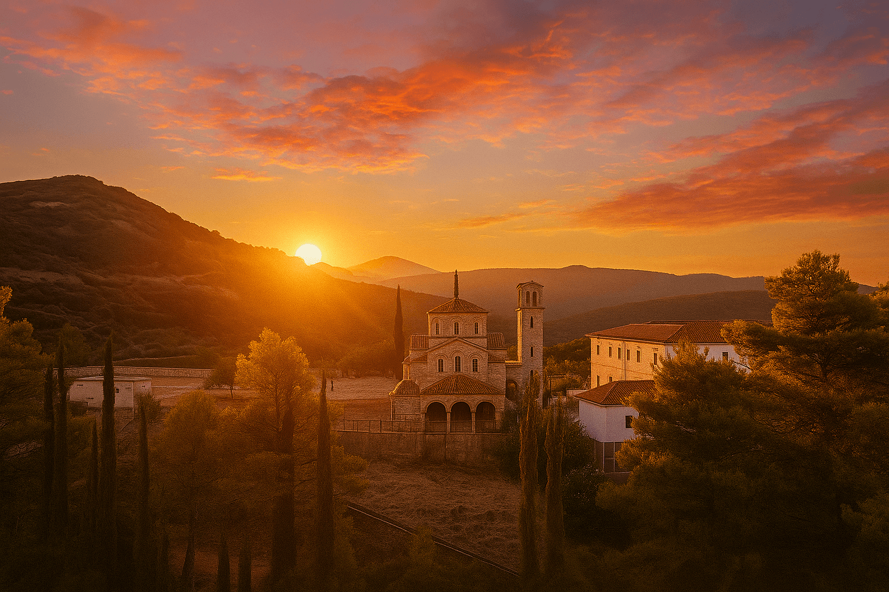

Η Ιερά Μονή

Η Ιερά Μονή Αγίου Κοσμά του Αιτωλού αποτελεί έναν τόπο πνευματικής αναφοράς και προσευχής.
Ο παλαιός ναός του Αγίου Κοσμά οικοδομήθηκε το 1908. Το σημερινό μοναστήρι χτίστηκε σε έκταση, δίπλα από τον παλαιό ναό, που παραχωρήθηκε από τρεις Μεγαλοδενδρίτες αδελφούς, το 1954 και με έρανο, αρχικά, μεταξύ των κατοίκων της περιφέρειας από το υστέρημα τους και αργότερα από πανελλήνιο έρανο. Η ανοικοδόμηση του ναού κράτησε έξι χρόνια. Η πρώτη πανηγυρική λειτουργία έγινε στις 24 Αυγούστου του 1961, οπόταν και αναγνωρίστηκε η επέτειος της μνήμης του Αγίου ως επίσημη τοπική γιορτή του Θέρμου. Συνεχίζεται μέχρι σήμερα η προσπάθεια για την ανακομιδή και μετακομιδή των ιερών λειψάνων του Αγίου Κοσμά στην γενέτειρα του, το Μέγα Δέντρο Θέρμου Αιτωλοακαρνανίας “Απόκουρον της Αιτωλίας”. Επίσης, συνεχίζεται και η προσπάθεια αποπεράτωσης των έργων σχετικά με την διαμόρφωση εσωτερικού και εξωτερικού χώρου του μοναστηριού όπως και των αγιογραφιών του καθολικού του.
Η Μονή διατηρεί ζωντανή την παράδοση της Ορθόδοξης Εκκλησίας και αποτελεί σημείο αναφοράς για τους πιστούς.
Ο Άγιος Κοσμάς ο Αιτωλός
Ο Άγιος Κοσμάς ο Αιτωλός (1714-1779) υπήρξε ένας από τους σημαντικότερους διδασκάλους του Γένους.
Με τις περιοδείες, τα κηρύγματα και την πνευματική του δράση συνέβαλε στη διατήρηση της πίστης και της παιδείας του ελληνικού λαού.